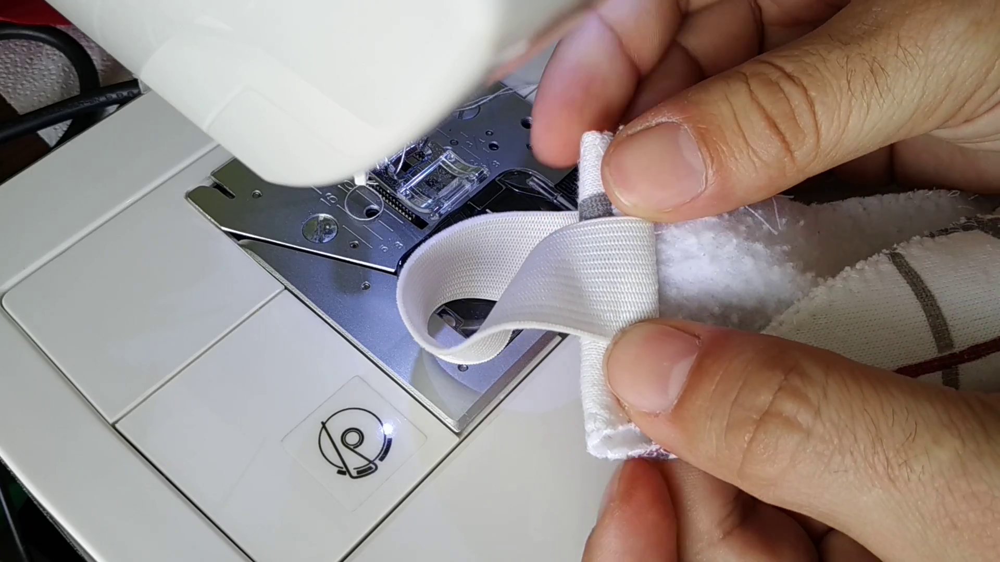

Trasformare della stoffa avanzata in una mascherina Difficoltà: MEDIA
Può essere utile avere una mascherina per il viso da usare in diverse situazoni, è possibile crearla con degli carti di un maglione.

Procuratevi il layout della mascherina e stampatelo.
Io ho usato questo PDF:
Download
Successivamente ritagliate la forma.
Ricavatene due parti uguali.

Cucite i bordi,per evitare che la tela si sfilacci.
Posizionate le due parti "paccia a faccia", in modo da nascondere la cucitura.
Cucite la parte frontale e rigirate la maschera.
Cucite l'elastico dalle due parti laterali della mascherina.
Ripiegate la stoffa per aumentare la resistenza.

La mascherina è terminata.